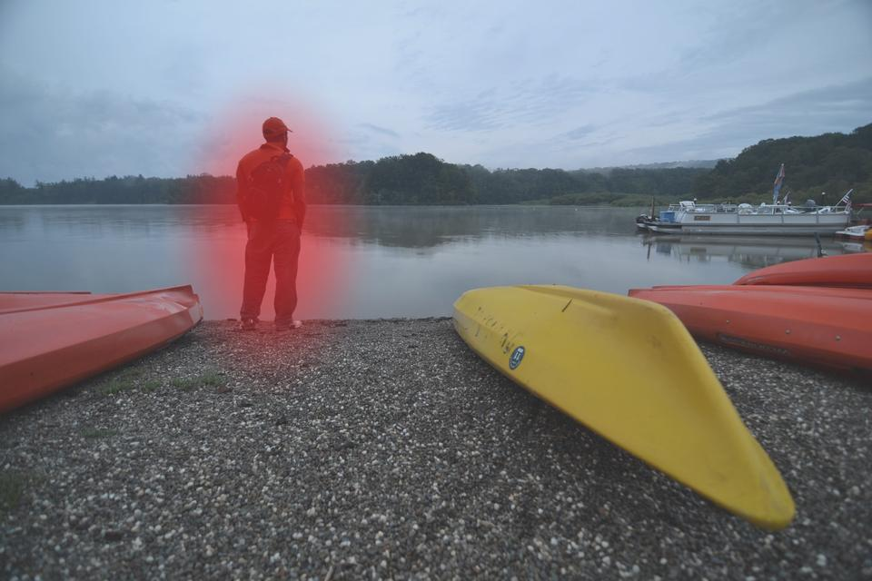
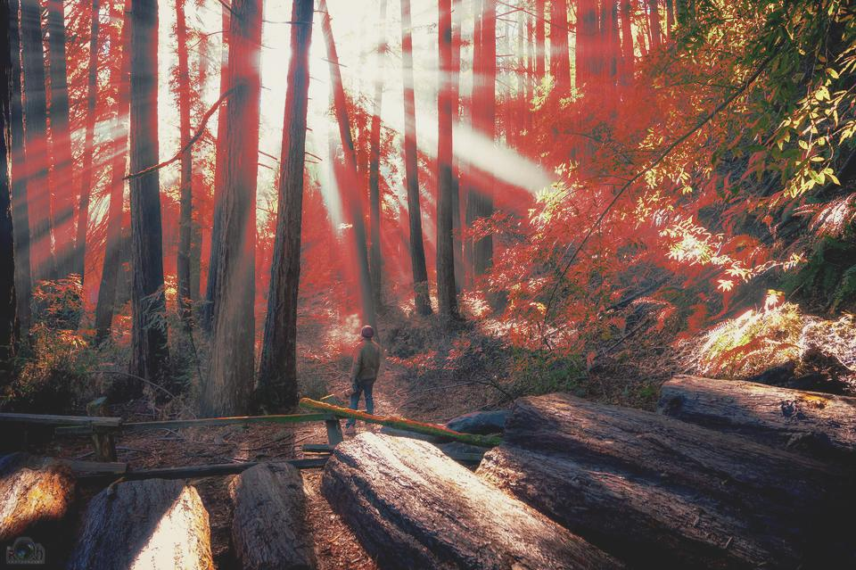
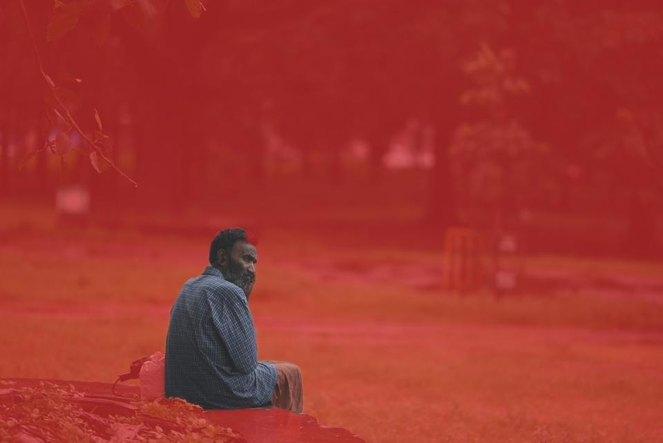

Masking
Edit just part of a photo: darken a sky, brighten a face, warm one corner. A mask says where; its sliders say what.
Start a mask
- In Develop, click the Masking button (the dashed circle under the histogram) or press ⇧W. Or jump straight to a tool: M Linear Gradient, ⇧M Radial Gradient, K Brush, ⇧J Color Range.
- Click Create New Mask and pick a kind, then draw it on the photo.
- Move the mask's sliders (Exposure, Temp, Clarity…). They change only the masked area.
- Press Return or click Done. Masks keep working after Masking closes; open it again any time to change them.
You can zoom and move around as usual while masking (Z, double-click, pinch, scroll, or hold Space and drag). Pins and handles stay the same size on screen.
The Masks panel
- Masks, in the order you made them. Click one to select it; double-click to rename. The eye hides its effect.
- A selected mask lists its parts, each with a badge: + added, − subtracted, ∩ intersected.
- New Mask, and with a mask selected, Add or Subtract a part: Brush, Linear Gradient, Radial Gradient, Luminance Range, Color Range, Depth Range, Select Subject, Select Sky, Select Background, Select Object, Select People.
- Show Overlay (O) tints the selected mask red, so you can see exactly where it lands.
- The selected mask's sliders.
Linear Gradient
A gradual change across the photo, like a graduated filter on a lens: darken a sky, lighten a foreground.

- Draw: drag from where the change should be full to where it should fade out, as in Lightroom. To darken a sky, start at the top and let go at the horizon.
- Three lines show the start, middle and end. Lines close together give a hard edge; far apart, a soft one.
- Move: drag the pin in the middle.
- Widen or narrow one side: drag an outer line anywhere along it; it moves straight, keeping its angle.
- Turn: drag the dashed center line anywhere along it; the gradient turns around its pin. The pointer shows which one you're on.
- Move one end freely: drag the round handle on an outer line to move and turn that side at once.
Radial Gradient
An ellipse: brighten a face, spotlight a subject, or (inverted) darken everything around it.

- Draw: drag from the center outward.
- Feather (0 to 100, default 50) softens the edge.
- The change is inside by default. Tick Invert to put it outside, for a custom vignette.
Brush
Paint the mask where you want it.
| Drag on the photo | Paint. |
| Hold ⌥ while painting, or choose Erase | Erase. |
| [ · ] | Smaller · bigger brush. |
| ⇧[ · ⇧] | Less · more feather. |
Size, Feather and Flow are in the panel. Flow is how much each stroke adds, so low Flow builds up gradually. The pointer is a circle the size of the brush, with an inner circle where the feather begins.
Luminance Range
Selects by brightness: only the parts of the photo between two brightness levels (0 to 100). Smoothness softens the edges of the range.
 Overlay: the brightest areas
Overlay: the brightest areasMost useful combined. Intersect a Linear Gradient with a Luminance Range to darken only the bright sky, not the trees that reach into it.
Color Range
Selects by color: click a color on the photo, and everything of a similar color is selected, wherever it is. Choose Color Range from New Mask, Add or Subtract, or press ⇧J; the pointer becomes an eyedropper.
| Click the photo | Pick the color under the pointer. |
| Drag over an area | Pick the range of colors in the box, such as a whole sky from blue to pale. A wider spread of colors selects a wider range. |
| ⇧-click or ⇧-drag | Add another color, up to five. |
| ⌥-click a marker | Remove that color. |
| Click again (no key held) | Start over with the new color. |

Overlay: the yellow kayak picked with one click- The colors picked, up to five. Each also has a marker on the photo, filled with its color, where you clicked; right-click a swatch to remove it.
- Refine: left keeps only colors very close to the picks, right reaches further to similar colors. Lightness counts half as much as hue and saturation, so the same green in shade is still picked.
The colors are read from the photo before your tone and color sliders, as Select Subject is, so changing Exposure or Saturation doesn't move the mask. While a Color Range part is selected, a drag on the photo picks colors rather than moving around; hold Space to move.
Keep it to one place. Color Range selects that color everywhere. Intersect it with a Brush or a Radial Gradient (right-click the mask › Intersect Mask With) to change only one area's greens.
Depth Range
Selects by distance: the parts of the photo between two depths, from 0 (the nearest part of the photo) to 100 (the farthest). Use it to cool a distant background, brighten a near foreground, or add haze only to faraway hills. Choose Depth Range from New Mask, Add or Subtract.
The depth comes from a depth model, Depth Anything V2 Small (Apache 2.0 license). Download it once (50 MB) from the Depth Range settings or Atelier › Settings › AI › Masking Models; it then runs on your Mac in under a second per photo, and photos are never sent anywhere. Depth is relative: each photo's own nearest and farthest parts are 0 and 100.
| Click the photo | Pick the depth under the pointer: the range becomes that depth with a little either side. |
| Drag over an area | Pick the range of depths in the box, such as a whole hillside. |
| ⇧-click or ⇧-drag | Widen the range to take that depth in too. |
- Near on the left, far on the right, with the chosen range outlined.
- From and To: the depths kept, 0 nearest to 100 farthest. A new Depth Range starts at 0 to 30, the nearest part of the photo.
- Smoothness softens the edges of the range, as in Luminance Range.
The depth is found on the photo before your tone and color sliders, and its edges are snapped to the photo's own edges, so a mask doesn't spill past the outline of a tree or a person. While a Depth Range part is selected, a drag on the photo picks depths rather than moving around; hold Space to move.
Combine it. Intersect a Depth Range with a Linear Gradient to change only the far horizon, or Subtract Select Subject so a person in the background keeps their color.
Select Subject and Select Object
Select Subject finds the main subject (people, animals, things in front) with Apple's Vision, on your Mac. Select Object finds something inside a box you drag, so smaller subjects work too; drag the pin to move the box.
 Select Subject
Select SubjectBoth have the edge controls: Grow, Refine Edge and Feather (default 20). To change the background instead of the subject, use Select Background. If Vision finds nothing, the panel says so.
Select Sky
Select Sky selects the sky in one step, to darken a bright sky, deepen its blue or warm a sunset without touching the land. It uses the same depth model as Depth Range (download it once, 50 MB): the depth model sees the sky as infinitely far, and the sky is the part at infinity that is open to the photo's top edge with no outline in between. Something that is only the farthest thing in the photo, like a stadium crowd behind a player, isn't at infinity, so it isn't taken, and neither is water reflecting the sky. A sunset that fades from pink to blue is followed, because the color changes a little at a time; a skyline, a tree line or a building against the sky stops it, because its outline is a sudden change, even when the city is as far away as the sky. Clouds the sky surrounds are taken, and so is sky seen through gaps, such as a tower's lattice or a tree's branches, where it matches the sky around it. The same rules hold for a blue noon, a sunset and a night sky. A far wall with no sky above it isn't taken, and a photo with no sky selects nothing and the panel says so.
It has Grow, Refine Edge and Feather like the other edge controls. Refine Edge starts at 60, so the edge follows tree lines and rooftops; raise it for fine branches. Invert selects the land instead.
Fog and haze. Where distant hills fade into a hazy sky, the depth model may see both as equally far and take the hills too. Subtract a Linear Gradient or a Brush from the mask there, or use Color Range on the sky instead.
Select Background
Select Background selects everything except the main subject, in one step: the same subject Select Subject finds, turned inside out. Use it to darken, cool or soften what is behind a person or an animal.

Select BackgroundIt has the same edge controls. Grow grows the background, so moving it right takes the background a little further onto the subject's edge, and left keeps it further away. Invert turns it back into the subject. If no subject stands out, there is no background to tell apart and the panel says so; try Color Range or a gradient instead.
Select People
Select People selects parts of people, like Lightroom's People masks. Apple's Vision finds each person, even one whose face is hidden by sunglasses or turned away, traces the face (jaw line, eyes, pupils, brows and lips) and outlines the person. A small model built into Atelier (Google's MediaPipe, about 8 MB) then tells each person's face skin, body skin, hair and clothes apart, so a beige sweater or a skin-colored scarf is clothes, not skin. Eyes, brows, lips and teeth come from the face's outline. Everything runs on your Mac; nothing is downloaded or sent anywhere. The line under the checkboxes says whether the built-in model ran; if it shows an orange warning, Hair, Clothes and Entire Person can't select anything and skin is guessed from color.
- Person: everyone, or one person. People are numbered left to right by face.
- Tick any parts, in any combination. Face Skin is the face without the eyes, brows and lips; tick Lips too to include the mouth (they meet with no gap). Eyebrows, Eye Sclera (the whites of the eyes), Iris and Pupil, Lips and Teeth (only when the mouth is open) come from Vision's outline of the face, so a whitening or iris boost touches only that feature. Body Skin is the neck, arms and hands of the same person; Hair and Clothes (hats and scarves too) are their own parts, Entire Person is the whole person, and Entire Face is the whole face in one piece (skin, brows, eyes, lips, teeth and the mouth, with no holes), for a change that should cover the face evenly. New parts start with Face Skin and Body Skin.
- The edge controls: Grow, Refine Edge and Feather (default 10).
A missed or extra patch is easiest to fix by subtracting or adding a Brush to the mask.
Press O to see the selection in red. If Vision finds no face, the panel says so; try Select Subject or a Brush instead. Match Look's Skin Tones use the same selection.
Edge controls
Select Subject, Select Background, Select Object and Select People share Fine Edges and three sliders for the selection's edge, applied in this order:
- Fine Edges
- Redraws the edge with BiRefNet (MIT license), which works out how much of each pixel is the subject. There are two models; download either or both: Fast (about 115 MB) takes a few seconds and gives a clean outline but misses loose strands, Hair Detail (about 470 MB) takes about half a minute and brings single strands through partly see-through. The first time, click Get and choose one; it turns on when the download is done. The menu beside the checkbox names the model that runs. Choose the other model there to switch, for every selection; if it isn't downloaded yet, it shows as Get Fast or Get Hair Detail with its size, and choosing it downloads it (with a progress bar and Cancel under the row) and then switches to it. Atelier › Settings… › AI › Masking Models does the same (Fine Edges uses), and its Remove deletes a model again. It runs on your Mac, on a square around the selection. Only the edge moves, within a band of where the selection was: strands outside it are added, background between strands inside it is taken out. With Select People only edges onto the background change, so Face Skin doesn't creep into Hair. Grow, Refine Edge and Feather shape the rest of the edge; they don't blur the strands Fine Edges finds. The line under the checkbox names the model and how long it took. The first Fast run after its download takes longest while your Mac prepares it; Hair Detail takes about half a minute every time.
- Grow
- Left shrinks the selection, right grows it, by up to 1% of the photo's long edge. Shrink to pull a halo off the background; grow to take in a missed rim.
- Refine Edge
- Moves the edge onto the photo's own edges: hair against the sky, a jaw line, an object's outline. 0 is off; higher follows the photo more closely over a wider band.
- Feather
- Softens the edge.
All three scale with the photo, so the preview and an export match. Each slider drag is one step in History.
Add, Subtract and Intersect
A mask can have several parts:
- Add
- Joins a part to the mask: two radial gradients on two faces.
- Subtract
- Cuts a part out: brush away the trees from a sky gradient.
- Intersect
- Keeps only where both overlap. Right-click the mask › Intersect Mask With.
Right-click a mask for Rename, Duplicate, Invert, Intersect Mask With and Delete. Right-click a part for Invert, Switch to Add / Subtract and Delete. Delete removes the selected part (the whole mask if it was the last part).
Mask sliders
Each mask has its own: Amount (0 to 200%, scales all of the mask's sliders at once), Temp, Tint, Exposure, Contrast, Highlights, Shadows, Whites, Blacks, Texture, Clarity, Dehaze, Hue, Saturation, Sharpness, Noise, Moiré and Defringe, then the mask's own Color Grading. Most work like their Basic and Detail twins. Double-click a name to reset it; Reset Sliders clears them all.
Invert shows once, for what is selected: with a part selected it sits with that part's settings and inverts just the part; with the mask row selected it sits under Amount and inverts the whole mask.
Temp and Tint go the Lightroom way: more Temp is warmer (yellow), more Tint adds magenta.
- Hue −180° to +180°
- Turns every color in the mask around the color wheel, keeping its brightness and strength. Right goes red → yellow → green → blue → magenta, left the other way; ±180° reaches the opposite color. The track shows where red goes. For fine moves, click the value and type it.
- Moiré 0 to 100
- Removes colored bands from fine patterns, such as fabric, screens or feathers, keeping their detail and brightness. Paint it only where the bands are, as in Lightroom.
- Defringe 0 to 100
- Removes purple and green fringes along edges inside the mask, with the same method as Lens Corrections › Defringe at its default colors. Use it where the whole-photo Defringe would touch colors you want to keep.
Color Grading in a mask
Under the sliders, each mask has its own Color Grading, as in Lightroom Classic 16: the same wheels as the Color Grading panel, with the 3-Way view or one wheel at a time, Luminance, Blending and Balance. They work exactly like the panel's (drag the dot, Shift, Command and Option, double-click to reset, arrow keys over a wheel, right-click to copy a wheel and paste it, also between the panel and a mask), but only inside the mask, on top of the photo's own grade. The mask's Amount scales how strong the tints and Luminance are; the hues, Blending and Balance stay. Double-click the Color Grading heading to reset just the mask's grade; Reset Sliders clears it with the rest.
The panel's Preset menu, color picker and eye buttons work on the whole photo, so they aren't in a mask.
Change your mind later. Masks stay on the same spot of the photo when you crop, straighten or change the Transform. They're saved with the photo, copied by Copy/Paste Settings and virtual copies, and can be included in presets.